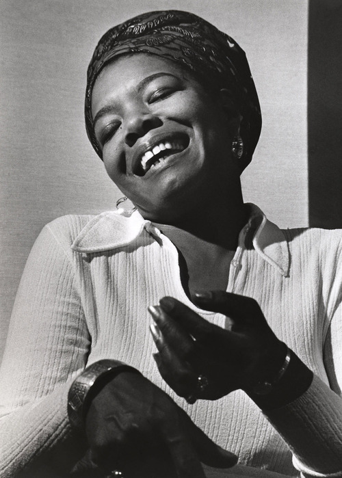

Maya Angelou (April 4, 1928 – May 28, 2014) was an American poet, memoirist, and civil rights activist. She published seven autobiographies, three books of essays, several books of poetry, and was credited with a list of plays, movies, and television shows spanning over 50 years. She received dozens of awards and more than 50 honorary degrees. Angelou is best known for her series of seven autobiographies, which focus on her childhood and early adult experiences. The first, I Know Why the Caged Bird Sings (1969), tells of her life up to the age of 17 and brought her international recognition and acclaim.
She became a poet and writer after a series of occupations as a young adult, including fry cook, sex worker, nightclub dancer and performer, cast member of the opera Porgy and Bess, coordinator for the Southern Christian Leadership Conference, and journalist in Egypt and Ghana during the decolonization of Africa. She was an actor, writer, director, and producer of plays, movies, and public television programs. In 1982, she earned the first lifetime Reynolds Professorship of American Studies at Wake Forest University in Winston-Salem, North Carolina. She was active in the Civil Rights Movement and worked with Martin Luther King Jr. and Malcolm X. Beginning in the 1990s, she made around 80 appearances a year on the lecture circuit, something she continued into her eighties. In 1993, Angelou recited her poem "On the Pulse of Morning" (1993) at President Bill Clinton's inauguration, making her the first poet to make an inaugural recitation since Robert Frost at President John F. Kennedy's inauguration in 1961.
With the publication of I Know Why the Caged Bird Sings, Angelou publicly discussed aspects of her personal life. She was respected as a spokesperson for black people and women, and her works have been considered a defense of black culture. Attempts have been made to ban her books from some U.S. libraries, but her works are widely used in schools and universities worldwide. Angelou's most celebrated works have been labeled as autobiographical fiction, but many critics consider them to be autobiographies. She made a deliberate attempt to challenge the common structure of the autobiography by critiquing, changing, and expanding the genre. Her books center on themes such as racism, identity, family, and travel.